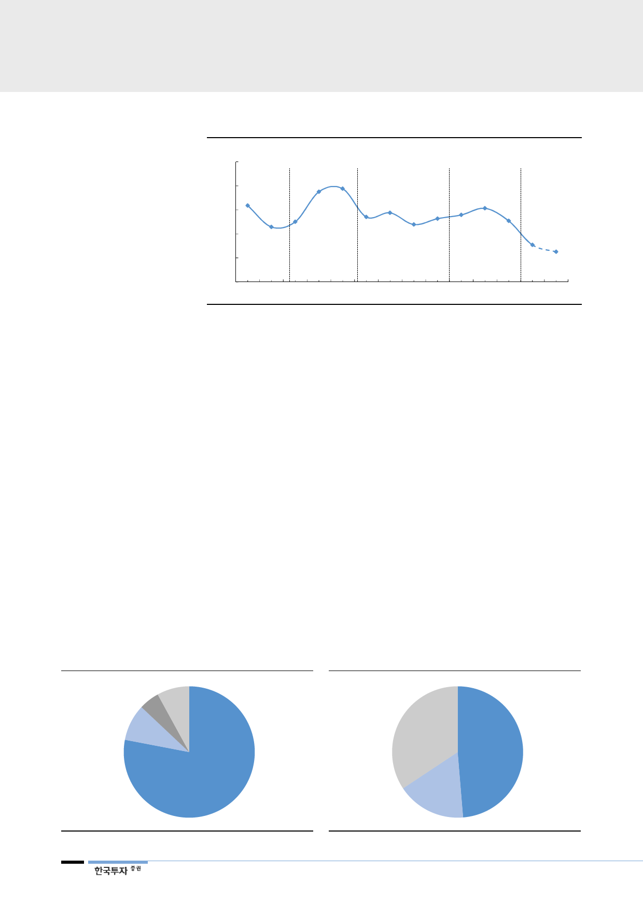

[그림 9] 아연 기본 제련수수료율
(%)
20
16
15.0
15.5
12
12.7
11.5
10.5
12.3
10.0
8
9.1
10.8
9.6
11.2
10.2
Miner
4
Market
Smelter
Market
Miner
Market
Smelter
Market
6.1
4.6
Miner
Market
0
05 06 07 08 09 10 11 12 13 14 15 16 17 18F
주: 아연 기본 제련수수료율 = 아연 제련수수료 / 기본 아연 가격
자료: 한국투자증권
전기차 확산되면서
납축전지 수요 감소해
연 수요 지속적으로 감소할
전망
3. 연 가격의 장기 약세 가능성
세번째는 장기적인 연 가격의 약세 가능성이다. 연(납)은 80% 가까이 배터리(납
축전지)에 사용된다. 안료, 탄약 등 나머지 수요는 20%를 조금 넘는다. 향후 전
기 자동차가 확대되리라는 것에 대한 반론은 많지 않을 것이다. 속도가 문제지 방
향성은 전기차가 확산된다는 점에 대해서는 부인하지 못할 것이다. 우리는 이 부
분에서 연 수요 감소를 우려한다. 연이 사용되는 납축전지는 1차전지(재충전불가)
다. 전기차에 사용되는 2차전지(재충전가능)에는 사용되지 않는다. 물론 전기차
에도 보조 배터리용으로 납축전지가 사용될 수 있지만 내연기관 자동차에 비해
크기가 작아지고 연 사용량이 감소한다. ESS(Energy Storage System)에도 납
축전지가 사용된다. ESS 확대로 연 수요 증가를 견인할 수도 있다. 그러나 납축
전지의 49%가 운송장치에 사용되며 ESS용은 17%에 불과하다. 그리고 ESS는
효율성이 낮아 향후 시장 규모 확대는 한계가 있을 전망이다. 결국 향후 연 수요
는 전기 자동차가 확대되며 점진적으로 감소할 것이다. 공급도 유사한 규모로 감
소하면서 가격이 하락하지 않을 수도 있다. 적어도 수요가 증가하며 연 가격이 상
승할 것이라고 예상하기는 어려운 상황이다.
[그림 10] 연(납) 사용처
탄약
5%
안료
9%
기타
8%
[그림 11] 납축전지 사용처
기타
34%
운송
49%
배터리
78%
ESS
17%
자료: 한국투자증권
8
자료: PMS, SNE리서치, 한국투자증권